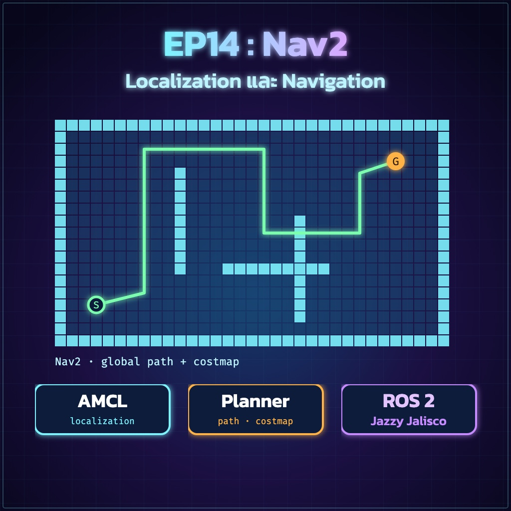
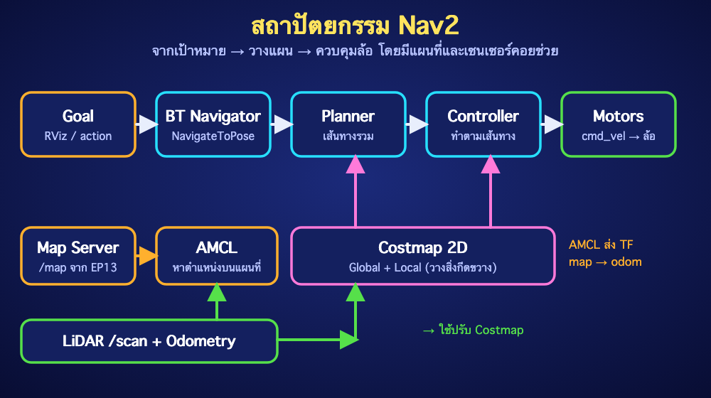
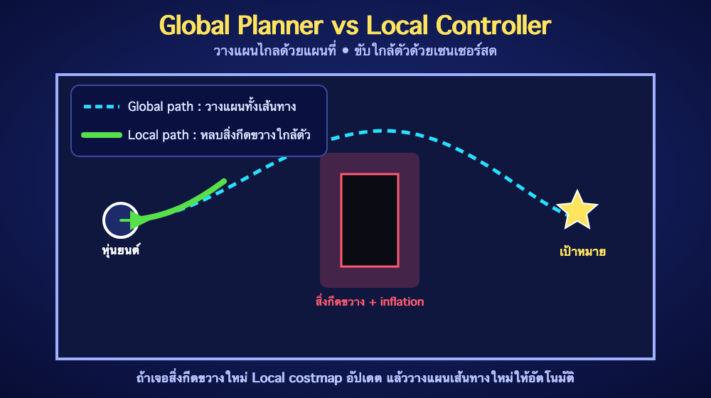

ย้อนกลับ

EP14
Nav2 — Localization และ Navigation
"ให้หุ่นยนต์รู้ตำแหน่งบนแผนที่ และเดินไปยังเป้าหมายเองอย่างปลอดภัย"
🎯 จุดประสงค์การเรียนรู้
- อธิบายหน้าที่ของส่วนประกอบหลักใน Nav2 (AMCL, Planner, Controller, Costmap) ได้
- ตรวจว่าหุ่นยนต์มีสิ่งจำเป็นครบก่อนเริ่มใช้ Nav2 ได้
- ตั้งค่าและเปิดใช้ Nav2 กับแผนที่จาก EP13 ได้
- ส่งเป้าหมายผ่าน RViz2 และ Command Line แล้วตรวจผลได้อย่างปลอดภัย
1. Nav2 คืออะไร?
Nav2 (Navigation 2) คือชุดโปรแกรมที่ทำให้หุ่นยนต์ "เดินไปยังจุดหมายเอง" เมื่อมีแผนที่แล้ว เหมือนการใช้แอปนำทางในรถ — มันรู้ว่าเราอยู่ตรงไหนบนแผนที่ วางเส้นทางไปจุดหมาย แล้วควบคุมล้อให้เดินตามเส้นทาง พร้อมหลบสิ่งกีดขวางที่เจอระหว่างทาง

| ส่วนประกอบ | หน้าที่ |
|---|
Map Server | โหลดแผนที่ (.yaml + .pgm จาก EP13) แล้วส่งเป็น /map |
AMCL | หาตำแหน่งหุ่นยนต์บนแผนที่ โดยเทียบ /scan กับแผนที่ และส่ง TF map → odom |
Costmap 2D | แผนที่ที่ใส่ "ค่าความเสี่ยง" รอบสิ่งกีดขวาง มีแบบ Global (ทั้งแผนที่) และ Local (รอบตัว) |
Planner Server | วางเส้นทางทั้งเส้นจากตำแหน่งปัจจุบันไปเป้าหมาย (Global Path) |
Controller Server | สั่งความเร็ว cmd_vel ให้เดินตามเส้นทาง พร้อมหลบสิ่งกีดขวางใกล้ตัว (Local Path) |
BT Navigator | ประสานงานทั้งหมดด้วย Behavior Tree และรับเป้าหมายแบบ NavigateToPose |
Behavior Server | ท่ากู้สถานการณ์ เช่น ถอยหลัง หมุนรอบตัว เมื่อติดขัด |

2. ก่อนเริ่ม: ตรวจว่ามีครบทุกอย่าง
Nav2 ต่อยอดจากทุกตอนก่อนหน้า ตรวจให้ครบก่อนเปิดใช้งาน:
| สิ่งที่ต้องมี | มาจากตอน | ตรวจด้วย |
|---|
| แผนที่ .yaml + .pgm | EP13 | ls ~/maps/ |
| /scan จาก LiDAR | EP12 | ros2 topic hz /scan |
| TF odom → base_link | EP11 | ros2 run tf2_ros tf2_echo odom base_link |
| TF base_link → laser_frame | EP9 | ros2 run tf2_ros tf2_echo base_link laser_frame |
| Node ที่รับ /cmd_vel แล้วหมุนล้อ | EP8, EP10 | ros2 topic info /cmd_vel |
⚠️ ความปลอดภัย: Nav2 ส่ง /cmd_vel เองเมื่อมีเป้าหมาย หุ่นยนต์จะเคลื่อนที่ทันที ก่อนทดสอบครั้งแรกให้ยกล้อพ้นพื้น จำกัดความเร็วต่ำ และเตรียมสวิตช์ตัดไฟ รวมทั้งต้องมี Watchdog ฝั่ง STM32 (EP8) ที่หยุดมอเตอร์เมื่อไม่ได้รับคำสั่ง
3. ติดตั้งและเตรียมไฟล์ตั้งค่า
sudo apt install -y ros-jazzy-navigation2 ros-jazzy-nav2-bringup
mkdir -p ~/ros2_ws/src
cd ~/ros2_ws/src
ros2 pkg create --build-type ament_python brobot_nav
mkdir -p brobot_nav/config
cp /opt/ros/jazzy/share/nav2_bringup/params/nav2_params.yaml \
brobot_nav/config/nav2_params.yaml
ไฟล์ nav2_params.yaml ยาวมาก ไม่ต้องเขียนใหม่ทั้งหมด ให้ค้นและแก้เฉพาะจุดสำคัญเหล่านี้:
| สิ่งที่ต้องแก้ | ทำไม |
|---|
| base_footprint → base_link (ค้นด้วย grep -n base_footprint) | โปรเจกต์นี้ใช้ Frame base_link ตั้งแต่ EP9 ค่าเริ่มต้นของ Nav2 บางจุดใช้ base_footprint |
| scan_topic ของ amcl และ topic ของ obstacle_layer / voxel_layer เป็น scan | ให้ตรงกับ Topic /scan ของ LiDAR |
| robot_radius ของ local_costmap และ global_costmap | ตั้งให้ใกล้รัศมีจริงของหุ่นยนต์ (เมตร) ไม่เช่นนั้นหุ่นยนต์จะผ่านทางแคบไม่ได้หรือเฉี่ยวชน |
| ความเร็วสูงสุดของ controller_server (เช่น max_vel_x, max_vel_theta) | เริ่มต้นต่ำ เช่น 0.15 m/s และ 0.5 rad/s เพื่อความปลอดภัย |
| use_sim_time ให้เป็น False | หุ่นยนต์จริงใช้เวลาจริง |
ชื่อพารามิเตอร์อาจต่างกันเล็กน้อยตามเวอร์ชันและ Controller ที่เลือกใช้ ให้ค้นดูในไฟล์ที่คัดลอกมา (ค่าเริ่มต้นของ Jazzy ใช้ DWB เป็น Controller)
แก้ setup.py ให้ติดตั้งโฟลเดอร์ config แล้ว Build:
import os
from glob import glob
# ในลิสต์ data_files=[ ... ] ให้เพิ่มบรรทัดนี้
(os.path.join('share', package_name, 'config'), glob('config/*.yaml')),
cd ~/ros2_ws
colcon build --symlink-install --packages-select brobot_nav
source install/setup.bash
4. เปิด Nav2
# Terminal 1 : Nav2 (ต้องรันส่วน LiDAR, Odometry และมอเตอร์ไว้แล้ว)
ros2 launch nav2_bringup bringup_launch.py \
map:=$HOME/maps/classroom.yaml \
params_file:=$(ros2 pkg prefix brobot_nav)/share/brobot_nav/config/nav2_params.yaml \
use_sim_time:=false
# Terminal 2 : RViz2 พร้อมการตั้งค่าสำหรับ Nav2
ros2 launch nav2_bringup rviz_launch.py
ตรวจว่า Node หลักพร้อมทำงาน (สถานะ active):
ros2 lifecycle get /map_server
ros2 lifecycle get /amcl
ros2 lifecycle get /controller_server
ros2 lifecycle get /planner_server
✅ Expected Result: ทุกคำสั่งตอบ active [3] และ RViz2 แสดงแผนที่จาก EP13
5. บอกตำแหน่งเริ่มต้น และส่งเป้าหมาย
- ใน RViz2 กดปุ่ม 2D Pose Estimate แล้วคลิกบนแผนที่ตรงตำแหน่งที่หุ่นยนต์ยืนอยู่จริง พร้อมลากเมาส์ให้ลูกศรชี้ทิศที่หุ่นยนต์หัน
- ดูจุดสีเขียวของ AMCL (Particle Cloud) ควรรวมตัวเป็นกลุ่มเล็กรอบหุ่นยนต์ เมื่อขยับหุ่นยนต์เล็กน้อย
- กดปุ่ม Nav2 Goal แล้วคลิกจุดหมายบนแผนที่ พร้อมลากเพื่อกำหนดทิศปลายทาง
- สังเกตเส้นทางสีเขียว (Global Path) และหุ่นยนต์เริ่มเคลื่อนที่ไปยังเป้าหมาย
ส่งเป้าหมายจาก Command Line
ros2 action send_goal /navigate_to_pose nav2_msgs/action/NavigateToPose \
"{pose: {header: {frame_id: map}, pose: {position: {x: 1.0, y: 0.5, z: 0.0}, orientation: {w: 1.0}}}}" \
--feedback
ตั้งตำแหน่งเริ่มต้นจาก Command Line (ทางเลือก)
ros2 topic pub --once /initialpose geometry_msgs/msg/PoseWithCovarianceStamped \
"{header: {frame_id: map}, pose: {pose: {position: {x: 0.0, y: 0.0, z: 0.0}, orientation: {w: 1.0}}}}"
⚠️ พิกัดเป้าหมายอยู่ใน Frame map (หน่วยเมตร) ตรวจให้แน่ใจว่าเป้าหมายอยู่ในพื้นที่ว่างของแผนที่ และมีระยะห่างจากสิ่งกีดขวางมากกว่ารัศมีหุ่นยนต์ ไม่เช่นนั้นจะวางแผนไม่ได้
6. ตรวจสอบระบบขณะนำทาง
ros2 topic echo /cmd_vel # ความเร็วที่ส่งให้หุ่นยนต์ (ดูแล้วกด Ctrl+C)
ros2 topic info /cmd_vel -v # ตรวจว่า Node มอเตอร์เป็น Subscriber อยู่
ros2 run tf2_ros tf2_echo map base_link # ตำแหน่งหุ่นยนต์บนแผนที่
ในบางเวอร์ชัน Nav2 ส่งคำสั่งผ่านหลายขั้น (Controller → Velocity Smoother → Collision Monitor) ก่อนออกที่ /cmd_vel ให้ตรวจชื่อ Topic ปลายทางจริงด้วย ros2 topic list และตั้ง Node มอเตอร์ให้ Subscribe ตรงกัน
🧪 LAB 14.1 — เดินไปหลายจุด
- ตั้ง Initial Pose ให้ตรงกับตำแหน่งจริง และยืนยันว่า Particle Cloud รวมตัวกัน
- ส่งเป้าหมาย 3 จุดในห้องทีละจุด รอให้ถึงก่อนส่งจุดต่อไป
- บันทึกเวลาและสังเกตว่าหุ่นยนต์หยุดห่างจากจุดหมายกี่เซนติเมตร
เกณฑ์ผ่าน: หุ่นยนต์ถึงทั้ง 3 จุดโดยไม่ชน และหยุดห่างจากจุดหมายไม่เกิน 20 ซม.
🧪 LAB 14.2 — หลบสิ่งกีดขวางใหม่
- ส่งเป้าหมายที่อยู่ห่างออกไปตรงๆ
- ขณะหุ่นยนต์กำลังเดิน วางกล่องไว้ขวางทาง (ห่างจากหุ่นยนต์เกิน 1 เมตร)
- สังเกตว่า Local Costmap เปลี่ยนอย่างไร และหุ่นยนต์เลือกเส้นทางใหม่หรือหยุดรอ
เกณฑ์ผ่าน: หุ่นยนต์หลบกล่องไปถึงเป้าหมาย หรือหยุดอย่างปลอดภัยโดยไม่ชน
⚠️ Common Problems
| อาการ | แนวทางแก้ |
|---|
| ส่งเป้าหมายแล้วหุ่นยนต์ไม่ขยับ | ตรวจ lifecycle ว่า active ตรวจ ros2 topic info /cmd_vel ว่ามี Node มอเตอร์ Subscribe และ Watchdog ไม่ตัดคำสั่ง |
| Particle Cloud กระจายหรือกระโดด | ตั้ง 2D Pose Estimate ใหม่ให้ตรง ตรวจ Odometry (EP11) และทิศ LiDAR (EP9) |
| Log ขึ้น Could not transform / base_footprint | ยังมี base_footprint ในไฟล์ตั้งค่า ให้เปลี่ยนเป็น base_link ทุกจุด |
| Costmap ไม่แสดงสิ่งกีดขวาง | ตรวจ topic scan และ frame ใน obstacle_layer และ TF ของ laser_frame |
| หุ่นยนต์ผ่านทางแคบไม่ได้ | ลด robot_radius หรือ inflation_radius ให้สมเหตุสมผลกับขนาดจริง |
| หุ่นยนต์สั่นหรือเฉี่ยวชนมุม | ลดความเร็วสูงสุด ตรวจ robot_radius และ PID ของมอเตอร์ (EP8) |
| Failed to make progress / ติดขัด | ตรวจว่าเป้าหมายอยู่ในพื้นที่ว่าง และ Behavior Server ทำงาน (ถอยหลัง/หมุน) |